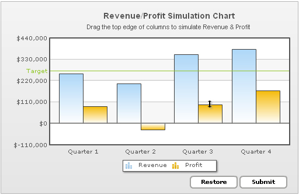
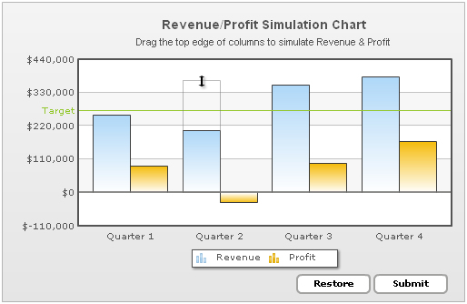
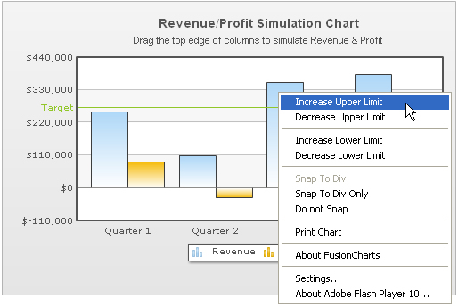
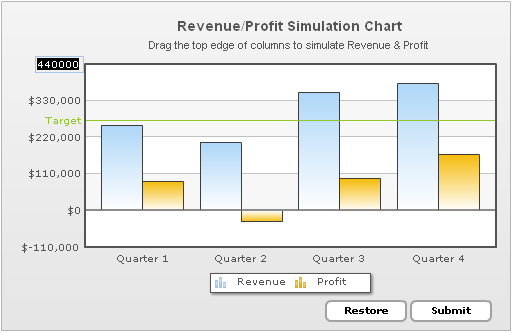
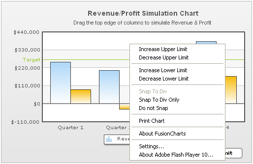

The drag-able charts are a special set of charts that allow you to visually manipulate the data on the chart and then submit it back. These charts can be intensively used for simulations, financial planning etc. Currently, there are three drag-able charts available:
- Drag-able Column 2D Chart
- Drag-able Line 2D Chart
- Drag-able Area 2D Chart
The chart derive their basic features from FusionCharts v3 Multi-Series Column, Multi-Series Line and Multi-series area charts respectively. But, in these charts, you can visually morph the data to update the figures on the chart.
Once you're done with the visual updation of data, you can submit the data:
- Either back to server as form (like HTML Forms) data.
- Or to JavaScript functions present on the same page as chart. These JavaScript functions can then process the data and do the needful.
Shown below is a simple "Revenue/Profit Simulation" drag-column 2D Chart:

<chart showValues='0' caption='Revenue/Profit Simulation chart' subCaption='Drag the top edge of columns to simulate Revenue and Profit' numberPrefix='$'>
<categories>
<category label='Quarter 1' />
<category label='Quarter 2' />
<category label='Quarter 3' />
<category label='Quarter 4' />
</categories>
<dataset id='R' seriesName='Revenue'>
<set id='R1' value='2562353'/>
<set id='R2' value='1945221'/>
<set id='R3' value='3540700'/>
<set id='R4' value='3814412'/>
</dataset>
<dataset id='P' seriesName='Profit' >
<set id='P1' value='717300'/>
<set id='P2' value='-321912'/>
<set id='P3' value='870000'/>
<set id='P4' value='1504200'/>
</dataset>
<trendLines>
<line startValue='2750000' color='009933' displayvalue='Target' showOnTop='1' />
</trendLines>
<styles>
<definition>
<style name="mySubCaptionFont" type="font" font="Arial" size="11" bold="0" />
</definition>
<application>
<apply toObject="SubCaption" styles="mySubCaptionFont" />
</application>
</styles>
</chart>
{
"chart":{
"showvalues":"0",
"caption":"Revenue/Profit Simulation chart",
"subcaption":"Drag the top edge of columns to simulate Revenue and Profit",
"numberprefix":"$"
},
"categories":[{
"category":[{ "label":"Quarter 1" },
{ "label":"Quarter 2"},
{ "label":"Quarter 3"},
{ "label":"Quarter 4"}]
}],
"dataset":[{
"id":"R",
"seriesname":"Revenue",
"data":[{
"id":"R1",
"value":"2562353"
},
{ "id":"R2", "value":"1945221" },
{ "id":"R3", "value":"3540700" },
{ "id":"R4", "value":"3814412" } ]},
{
"id":"P",
"seriesname":"Profit",
"data":[{
"id":"P1",
"value":"717300"
},
{ "id":"P2", "value":"-321912" },
{ "id":"P3", "value":"870000" },
{ "id":"P4", "value":"1504200" }
]}],
"trendlines":[{
"line":[{
"startvalue":"2750000",
"color":"009933",
"displayvalue":"Target",
"showontop":"1"
}]}],
"styles":{
"definition":[{
"name":"mySubCaptionFont",
"type":"font",
"font":"Arial",
"size":"11",
"bold":"0"
}
],
"application":[{
"toobject":"SubCaption",
"styles":"mySubCaptionFont"
}]}}
As you can see above (see the Profit Column of Quarter 3), the user can visually drag the columns to accept new values.
You can opt to make all the columns drag-able or just a select few as shown in the chart below. In the chart below, the first two sets of columns are actual values and hence have been made non-drag-able. The rest of the columns are predictive values, which can be dragged and adjusted. Hence, they've been displayed as dashed columns.

<chart caption='Product Sales Comparison' subcaption='Drag the top edge of dashed columns to adjust data' showvalues='0' xAxisName='Year' yAxisName='Units' restoreBtnBorderColor='A2A3A0' formBtnBorderColor='A2A3A0'>
<categories>
<category label='2005 (Actuals)' />
<category label='2006 (Actuals)' />
<category label='2007 (Predicted)' />
<category label='2008 (Predicted)' />
<category label='2009 (Predicted)' />
</categories>
<dataset id='IJ' seriesName='Inkjet Printers'>
<set id='IJ2005' value='25601' allowDrag='0'/>
<set id='IJ2006' value='20148' allowDrag='0'/>
<set id='IJ2007' value='17372' dashed='1'/>
<set id='IJ2008' value='35407' dashed='1'/>
<set id='IJ2009' value='38105' dashed='1'/>
</dataset>
<dataset id='LJ' seriesName='Laser Printers' showValues='0'>
<set id='LJ2005' value='57401' allowDrag='0'/>
<set id='LJ2006' value='41941' allowDrag='0'/>
<set id='LJ2007' value='45263' dashed='1'/>
<set id='LJ2008' value='117320' dashed='1'/>
<set id='LJ2009' value='114845' dashed='1'/>
</dataset>
<dataset id='CR' seriesName='Cartridges' showValues='0'>
<set id='CR2005' value='45000' allowDrag='0'/>
<set id='CR2006' value='44835' allowDrag='0'/>
<set id='CR2007' value='18722' dashed='1'/>
<set id='CR2008' value='77557' dashed='1'/>
<set id='CR2009' value='92633' dashed='1'/>
</dataset>
<styles>
<definition>
<style name="myCaptionFont" type="font" font="Arial" size="14" bold="1" />
<style name="mySubCaptionFont" type="font" font="Arial" size="10" bold="0" />
</definition>
<application>
<apply toObject="Caption" styles="myCaptionFont" />
<apply toObject="SubCaption" styles="mySubCaptionFont" />
</application>
</styles>
</chart>
{
"chart":{
"caption":"Product Sales Comparison",
"subcaption":"Drag the top edge of dashed columns to adjust data",
"showvalues":"0",
"xaxisname":"Year",
"yaxisname":"Units",
"restorebtnbordercolor":"A2A3A0",
"formbtnbordercolor":"A2A3A0"
},
"categories":[{
"category":[{
"label":"2005 (Actuals)"
},
{
"label":"2006 (Actuals)"
},
{
"label":"2007 (Predicted)"
},
{
"label":"2008 (Predicted)"
},
{
"label":"2009 (Predicted)"
}
]
}
],
"dataset":[{
"id":"IJ",
"seriesname":"Inkjet Printers",
"data":[{
"id":"IJ2005",
"value":"25601",
"allowdrag":"0"
},
{
"id":"IJ2006",
"value":"20148",
"allowdrag":"0"
},
{
"id":"IJ2007",
"value":"17372",
"dashed":"1"
},
{
"id":"IJ2008",
"value":"35407",
"dashed":"1"
},
{
"id":"IJ2009",
"value":"38105",
"dashed":"1"
}
]
},
{
"id":"LJ",
"seriesname":"Laser Printers",
"showvalues":"0",
"data":[{
"id":"LJ2005",
"value":"57401",
"allowdrag":"0"
},
{
"id":"LJ2006",
"value":"41941",
"allowdrag":"0"
},
{
"id":"LJ2007",
"value":"45263",
"dashed":"1"
},
{
"id":"LJ2008",
"value":"117320",
"dashed":"1"
},
{
"id":"LJ2009",
"value":"114845",
"dashed":"1"
}
]
},
{
"id":"CR",
"seriesname":"Cartridges",
"showvalues":"0",
"data":[{
"id":"CR2005",
"value":"45000",
"allowdrag":"0"
},
{
"id":"CR2006",
"value":"44835",
"allowdrag":"0"
},
{
"id":"CR2007",
"value":"18722",
"dashed":"1"
},
{
"id":"CR2008",
"value":"77557",
"dashed":"1"
},
{
"id":"CR2009",
"value":"92633",
"dashed":"1"
}
]
}
],
"styles":{
"definition":[{
"name":"myCaptionFont",
"type":"font",
"font":"Arial",
"size":"14",
"bold":"1"
},
{
"name":"mySubCaptionFont",
"type":"font",
"font":"Arial",
"size":"10",
"bold":"0"
}
],
"application":[{
"toobject":"Caption",
"styles":"myCaptionFont"
},
{
"toobject":"SubCaption",
"styles":"mySubCaptionFont"
}
]
}
}
Shown below is a column from "Revenue/Profit Simulation Chart" being dragged. In this image, the revenue column of second quarter is being adjusted to assume a higher value.

In this image, we're extending a already-positive column to another positive value itself. If you do not want this positive column to be able to extend to a negative zone, the drag charts provide you with an option to set which positive columns can extend into negative zone. For example, in the above chart, none of the Revenue columns can go into negative zone, as revenue cannot be negative. The profit columns, though, can extend to negative zone.
The chart, by default, calculates y-axis upper and lower limits based on the data provided to it. If you want any column to assume a value not covered within this axis range, you can increase or decrease the limits using the context menu. Shown below is an example where we're trying to increase the chart upper limit by selecting "Increase Upper Limit" item from the context menu.

Once selected, you'll see that the chart has increased its upper limit from $440,000 to $550,000. Your columns can now assume upper limit values upto $550,000.

Similarly, you can decrease the lower limit values.

Lower limit value decreased from $-110,000 to $-220,000.

If you want to set manual values for the limits, you can just click on the limits and edit them directly.

Similarly, you can edit upper limit directly.

If you enter a limit value which cannot be accepted by the chart, it will show an intuitive error message.

For ease of dragging and data setting, the drag charts offer three snapping options for the columns/anchors:
- Snap to Div - This option generates a kind of stickiness during dragging. That is, when the users now drag and leave their columns near any divisional lines on the chart, the columns will stick to them and attain their values. You can control this stickiness factor in pixels.
- Snap to Div Only - Using this option, the columns will always stick to one of the divisional lines on the chart. It cannot be adjusted to a value between any two divisional lines. It will stick to a divisional line when released, whichever is closer to it.
- Do not Snap - If you do not want the columns to snap to any divisional lines, this option can be selected.
